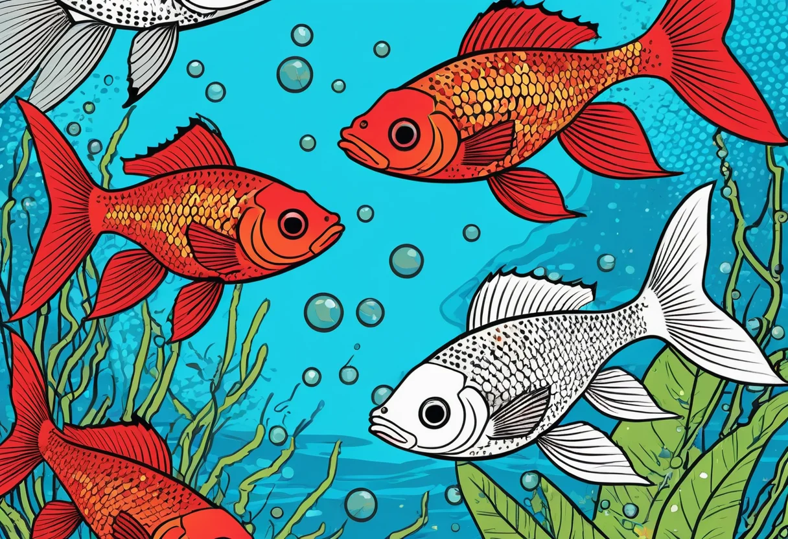
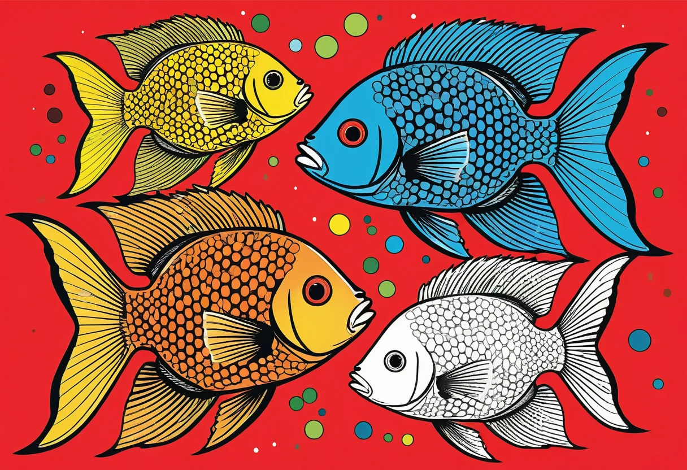

Vergesellschaftung von Aquarienfischen – Wer verträgt sich?
Die Vergesellschaftung verschiedener Fischarten ist eine der größten Herausforderungen in der Aquaristik. Nicht jeder Fisch verträgt sich mit jedem – Größenunterschiede, unterschiedliche Temperaturansprüche, Revierverhalten und Futterkonkurrenz können zu Stress, Verletzungen und im schlimmsten Fall zum Tod führen. Eine gut durchdachte Vergesellschaftung ist daher der Schlüssel zu einem friedlichen und harmonischen Aquarium. In diesem umfassenden Leitfaden erfährst du, welche Fische sich miteinander vertragen, worauf du achten musst und wie du typische Konflikte vermeidest.
Die Grundregeln der Vergesellschaftung
Bevor du verschiedene Fischarten zusammen in ein Becken setzt, solltest du einige grundlegende Prinzipien beachten. Diese Regeln helfen dir, von Anfang an die richtigen Entscheidungen zu treffen und spätere Probleme zu vermeiden.
Kompatible Wasserwerte
Alle Fische in einem Becken müssen ähnliche Ansprüche an Temperatur, pH-Wert und Härte haben. Ein Diskusfisch aus dem Amazonas bei 28 °C und pH 6,0 wird sich in einem Malawisee-Becken mit pH 8,5 und 24 °C nicht wohlfühlen. Informiere dich vor dem Kauf genau über die bevorzugten Wasserwerte jeder Art und wähle nur Fische aus, die ähnliche Bedingungen benötigen.
Größenverhältnisse beachten
Eine Faustregel besagt: Jeder Fisch, der ins Maul eines anderen Fisches passt, wird irgendwann gefressen. Achte daher auf die Endgröße der Tiere – ein kleiner Neonsalmler kann schnell zur Beute eines ausgewachsenen Skalars werden. Auch das Wachstumstempo spielt eine Rolle: Manche Fische wachsen deutlich schneller als andere, was das Größenverhältnis innerhalb weniger Wochen verändern kann.
Friedliche vs. aggressive Arten
Einige Fischarten sind von Natur aus friedlich und eignen sich für die Gesellschaftsaquarium-Haltung. Andere sind territorial, aggressiv oder räuberisch und sollten nur mit Bedacht oder gar nicht vergesellschaftet werden. Buntbarsche aus dem Malawisee sind beispielsweise für ihr aggressives Revierverhalten bekannt, während die meisten Salmler friedliche Schwarmfische sind.
Sozialverhalten und Schwimmzonen
Fische besiedeln unterschiedliche Bereiche im Aquarium: Bodenregion (Grundel, Welse), Mittelregion (Salmler, Guppys) und Oberfläche (Zahnkarpfen, Halbschnäbler). Eine gute Vergesellschaftung nutzt alle drei Zonen und vermeidet so Konkurrenz um Platz und Futter.


Die friedlichsten Gesellschaftsfische
Die folgenden Fischarten gelten als besonders friedlich und eignen sich hervorragend für ein Gesellschaftsaquarium. Sie können in der Regel problemlos miteinander vergesellschaftet werden, sofern die Beckengröße und die Wasserwerte stimmen.
Neonsalmler (Paracheirodon innesi)
Neonsalmler sind die Klassiker unter den Gesellschaftsfischen. Sie werden etwa 3–4 cm groß, leben in Schwärmen von mindestens 8–10 Tieren und sind absolut friedlich. Ihr leuchtend blauer Streifen macht sie zu einem Blickfang. Sie bevorzugen weiches, leicht saures Wasser bei 22–26 °C und sind mit den meisten anderen friedlichen Fischen kompatibel.
Guppys (Poecilia reticulata)
Guppys sind lebendgebärende Zahnkarpfen, die sich großer Beliebtheit erfreuen. Sie sind friedlich, farbenfroh und sehr anpassungsfähig. Guppys fühlen sich bei 22–28 °C und einem pH-Wert von 7,0–8,0 wohl. Achtung: Die Männchen haben oft lange, auffällige Schwanzflossen, die von Flossenkümmerern (wie Sumatrabarben) attackiert werden können.
Panzerwelse (Corydoras)
Panzerwelse sind friedliche Bodenbewohner und werden 3–8 cm groß. Sie leben in Gruppen von mindestens 5 Tieren und durchwühlen den Bodengrund nach Futterresten. Ihr gepanzertes Aussehen und ihr putziges Verhalten machen sie zu Lieblingen vieler Aquarianer. Sie sind mit den meisten friedlichen Fischen kompatibel.
Rote von Rio (Hyphessobrycon eques)
Diese attraktiven Salmler werden etwa 4 cm groß und leuchten in kräftigen Rottönen. Sie sind Schwarmfische (ab 8 Tiere) und bevorzugen dichte Bepflanzung mit freiem Schwimmraum. Rote von Rio sind sehr friedlich und eignen sich für die meisten Gesellschaftsbecken ab 80 cm Kantenlänge.
Otocinclus (Ohrgitterharnischwelse)
Otocinclus sind kleine, friedliche Algenfresser, die nur 3–5 cm groß werden. Sie leben in Gruppen und weiden Algen von Blättern, Scheiben und Dekoration ab. Sie sind völlig harmlos und mit allen friedlichen Fischen verträglich. Einzige Bedingung: Das Aquarium sollte nicht zu frisch sein, da Otocinclus auf einen gewissen Aufwuchs angewiesen sind.
🛒 Empfohlene Produkte
Achtung: Diese Fische vertragen sich nicht
Manche Fischarten sind von Natur aus schwierig in der Vergesellschaftung oder sollten besser gar nicht mit anderen Arten zusammenleben. Hier eine Übersicht der häufigsten Problemfische:
Sumatrabarbe (Puntigrus tetrazona)
Die Sumatrabarbe ist ein wunderschöner, aber leider flossenknipsernder Fisch. In zu kleinen Gruppen oder bei falscher Vergesellschaftung attackiert sie die langen Flossen von Guppys, Skalaren oder Fadenfischen. Halte Sumatrabarben in Gruppen ab 10 Tieren in einem Becken ab 100 cm – dann bleibt das Flossenklemmen meist aus.
Skalare (Pterophyllum scalare)
Skalare sind zwar elegant, aber sie fressen alles, was in ihr Maul passt. Neonsalmler, Garnelen oder kleine Guppys werden als Beute betrachtet. Zudem können Skalare untereinander und gegenüber anderen Fischen ein ausgeprägtes Revierverhalten entwickeln. Sie sollten nur mit größeren, wehrhaften Fischen vergesellschaftet werden.
Malawisee-Buntbarsche
Die Buntbarsche aus dem Malawisee sind für ihr aggressives und territoriales Verhalten bekannt. Sie sind mit den meisten anderen Süßwasserfischen nicht kompatibel und sollten nur in einem Artbecken oder mit anderen robusten Malawisee-Buntbarschen gehalten werden. Ihr hoher pH-Wert (8,0–8,5) passt zudem nicht zu Weichwasserfischen.
Kampffisch (Betta splendens)
Männliche Kampffische sind Einzelgänger und vertragen sich weder mit Artgenossen noch mit anderen farbenprächtigen oder flossentragenden Fischen. Sie können in einem Artbecken mit friedlichen Bodengründlern und Garnelen gehalten werden, aber Vorsicht: Auch Garnelen werden manchmal als Beute betrachtet.
Die richtige Besatzdichte
Neben der Verträglichkeit der Arten spielt auch die Besatzdichte eine entscheidende Rolle. Ein überbesetztes Aquarium führt unweigerlich zu Stress, schlechter Wasserqualität und Krankheiten. Als Faustregel gilt:
- 1 cm Fisch pro Liter Wasser – Diese alte Regel ist heute umstritten, gibt aber eine grobe Orientierung.
- Moderne Faustregel: 1 cm Fisch pro 2 Liter Wasser bei guter Filterung und Bepflanzung.
- Fischart berücksichtigen: Große, aktive Schwimmer (Barben, Regenbogenfische) brauchen mehr Platz als ruhige Bodenbewohner.
Wichtig ist auch die so genannte „Einsatzreihenfolge": Setze zuerst die friedlichen, scheuen Fische ein, damit sie sich einleben und ihr Revier finden können. Erst später folgen die durchsetzungsstärkeren Arten. So vermeidest du, dass die Neuen direkt von den Alteingesessenen gejagt werden.
Vergesellschaftungstabelle
Die folgende Übersicht zeigt, welche Fischgruppen typischerweise gut miteinander auskommen:
- Salmler + Panzerwelse + Guppys: Perfekte Anfängerkombination für 60–120 cm Becken.
- Salmler + Zwergbuntbarsche + Otocinclus + Garnelen: Südamerikanisches Gesellschaftsbecken, 80–120 cm.
- Regenbogenfische + Regenbogenbarben + Panzerwelse: Australasiatisches Becken, 100–150 cm.
- Malawisee-Buntbarsche + Synodontis-Welse: Nur für erfahrene Aquarianer, ab 150 cm.
- Diskus + Rote Neon + Beilbäuche + L-Welse: Nur mit konstanten Wasserwerten ab 150 cm.
Häufige Fehler bei der Vergesellschaftung
Selbst erfahrene Aquarianer machen gelegentlich Fehler bei der Vergesellschaftung. Die häufigsten Probleme sind:
- Zu wenige Schwarmtiere: Salmler und Barben brauchen große Gruppen (8–15+). In kleinen Gruppen werden sie scheu oder aggressiv.
- Zu kleine Becken: Viele Fische werden deutlich größer als beim Kauf. Ein 5-cm-Skalar wird schnell 20 cm hoch.
- Ignorieren der Reviergröße: Buntbarsche beanspruchen feste Reviere. Ohne ausreichend Platz und Struktur kommt es zu Kämpfen.
- Falsche Männchen/Weibchen-Verhältnisse: Bei Lebendgebärenden sind 2–3 Weibchen pro Männchen ideal, sonst wird die Dame ständig belästigt.
Fazit
Die Vergesellschaftung von Aquarienfischen ist eine Kunst, die Geduld, Recherche und Beobachtungsgabe erfordert. Mit den richtigen Grundregeln – kompatible Wasserwerte, passende Größenverhältnisse, friedliche Arten, ausreichende Gruppengrößen – steht einem harmonischen Gesellschaftsbecken jedoch nichts im Wege. Beobachte deine Fische regelmäßig, greife bei ersten Anzeichen von Stress oder Aggression ein und zögere nicht, unverträgliche Tiere umzusetzen. Ein gut vergesellschaftetes Aquarium belohnt dich mit lebhaften, natürlichen Verhaltensweisen und einer faszinierenden Unterwasserwelt.
Hast du konkrete Fragen zur Vergesellschaftung? In unserem Artikel über die beliebtesten Aquarienfische findest du weitere Steckbriefe und Haltungstipps.